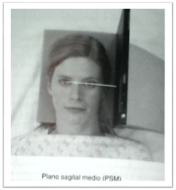
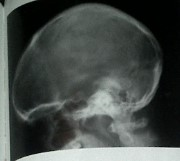
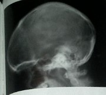
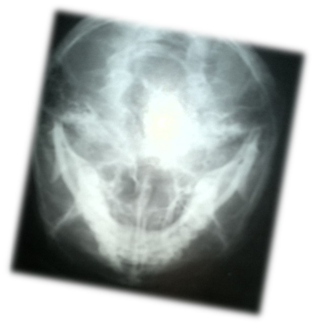
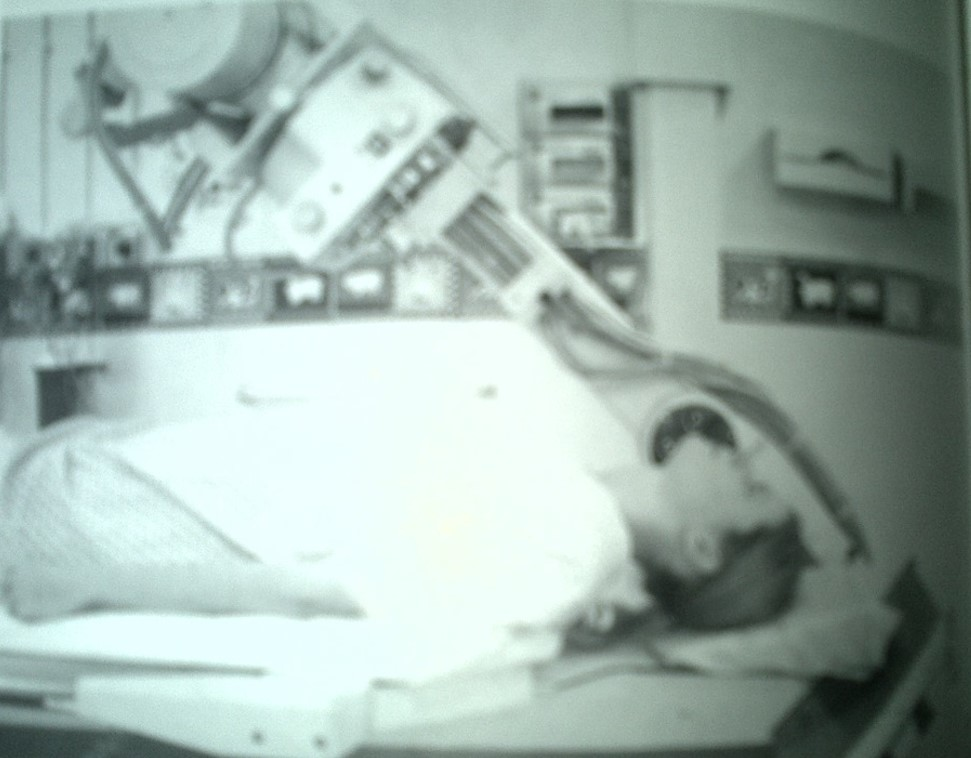

Lateral supino con rayo horizontal
Posición del paciente y el chasis:
El paciente está en supino, con la cabeza inmovilizada en una almohada craneal no radiopaca, lo que asegura que la región occipital este incluida en la imagen final.
Ajuste la cabeza para que el plano sagital medio sea perpendicular a la mesa/ camilla y la línea Interorbitaria sea perpendicular al chasis.
Apoye el chasis de parrilla verticalmente contra la cara lateral de la cabeza, paralelo al plano sagital medio, con su borde largo 5cm por encima del vértice del cráneo.
Dirección y centrado del haz de rayos x
El rayo horizontal central es paralelo a la línea Interorbitaria , para que esté en ángulo recto con el plano sagital medio.
Centre en la mitad entre la glabela y la protuberancia occipital externa, en un punto aproximado de 5cm superior al meato auditivo externo.El eje largo del chasis debe coincidir con eje largo del cráneo

Lateral en bipedestacion
Posición del paciente y el chasis
El paciente se sienta erecto de cara al Bucky y la cabeza se gira, de forma que el plano sagital medio sea paralelo al bucky y la línea interorbitaria perpendicular al mismo.Se puede rotar ligeramente los hombros para conseguir la correcta posición, agarrándose el paciente al bucky para una mayor estabilidadColoque el chasis paralelo al bucky erecto, de forma que su borde este a 5cm por encima del vértice cranealSe puede colocar una almohada radiolúcida debajo de la mandíbula como apoyo
 

Submentovertical
Posición del Paciente y el Chasis
El paciente puede explorarse erguid o en supino. Si el paciente está inestable se recomienda la técnica de supino.
Supino:
Los hombros del paciente se levantan y se hiperextiende el cuello para que el vértice craneal contacte con el chasis, parrilla o mesa. Se coloca la cabeza para dejar los meatos auditivos externos equidistantes al chasis. El plano sagital medio tiene que estar en ángulo recto al chasis con su línea media, el plano orbitomeatal debe ser lo más paralelo al chasis.
Erguido:
El paciente se sienta a una corta distancia del bucky vertical.El cuello se hiperextiende para permitir que la cabeza caiga hasta que el vértice compacte con el centro del bucky vertical

